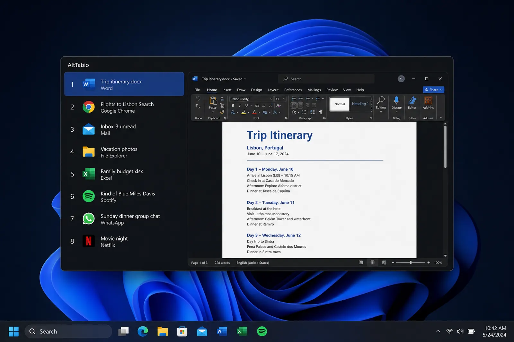

See the window before you switch
A numbered list, a live preview, and search as you type. Free for 64-bit Windows.
No windows match. Clear the search to see the full list.
Same shortcut.
A list you can read.
Hold Alt, tap Tab. The overlay is built for a desk with twenty windows, not four thumbnails.

The keys you already use
Five shortcuts cover almost everything. The rest are there if you want them.
Show every shortcut
Make it feel like yours
Eight icon colors. Azure is the default.
Azure, the default
Up and running in a minute
One executable. No installer wizard, no store account, no extra runtime.
Download
Get the latest Windows archive from GitHub Releases. It is a small zip, nothing else to install.
Place
Unzip it into a folder you will keep. Documents works. If you enable start with Windows, prefer a folder only administrators can write, such as Program Files.
Run
Open AltTabio.exe, click Yes on the Windows prompt, then press Alt+Tab.
Questions
Free, the permission prompt, and how to leave.
Is it really free? What is the catch?
There isn't one. AltTabio is free, open-source software under the MIT license. No trial, no ads, no account, no premium version.
Will it slow down my computer?
No. It is a single small native program, and it sits quietly until you press Alt+Tab. There is no background syncing or phoning home, because it has no internet connection.
Does it collect any of my data?
None. AltTabio contains no analytics and no networking. It could not send your data anywhere even if it wanted to. Anyone can verify that in the public source.
Why does Windows ask for permission when it starts?
That approval lets AltTabio respond to Alt+Tab before Windows does, and lets it close a frozen program when you ask. Those are the only reasons.
What if I want the old Alt+Tab back?
Right-click the AltTabio icon in the system tray and choose Exit. Windows goes back to normal. You can also keep AltTabio on Alt+Tab and leave Win+Tab alone, or the other way around.
How do I uninstall it?
Turn off start with Windows if you enabled it, exit from the tray icon, and delete the folder. That is everything.
Which computers does it work on?
Any modern 64-bit Windows PC, including Windows 10 and Windows 11. Multiple monitors and high-resolution displays are supported.
Is the overlay on this page the real app?
No. It is a replica so you can try typed search and number keys in the browser. Live previews of your actual windows need the Windows download.
Is this an Alt+Tab Terminator alternative?
Yes. AltTabio is an independent open-source window switcher for people who want that kind of list-and-preview Alt+Tab on Windows. It is not affiliated with Alt+Tab Terminator.
Try it for a minute
Download, unzip, press Alt+Tab. If you don't like it, delete the folder.
Free for 64-bit Windows. MIT licensed.